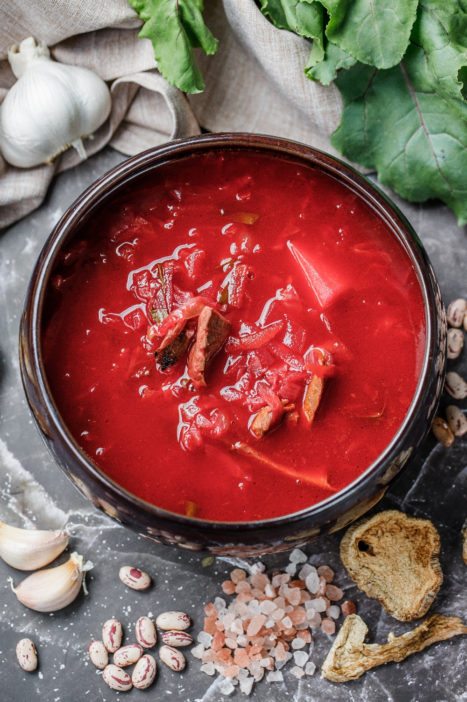
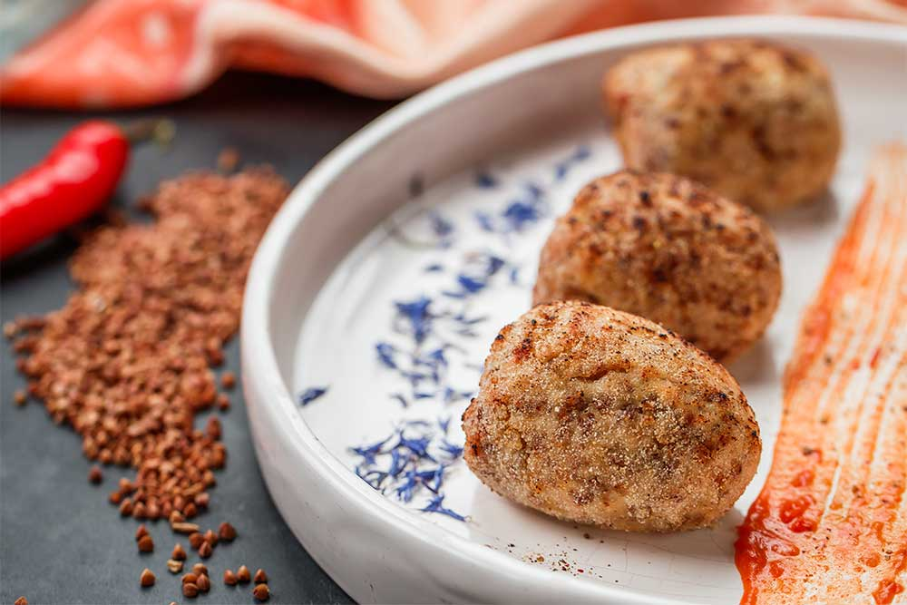
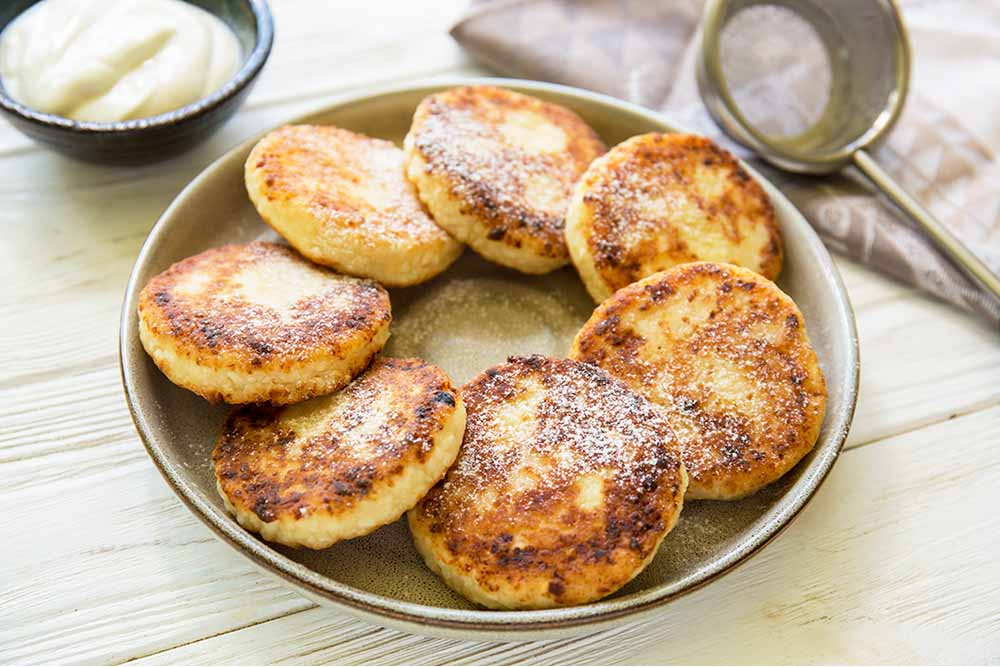
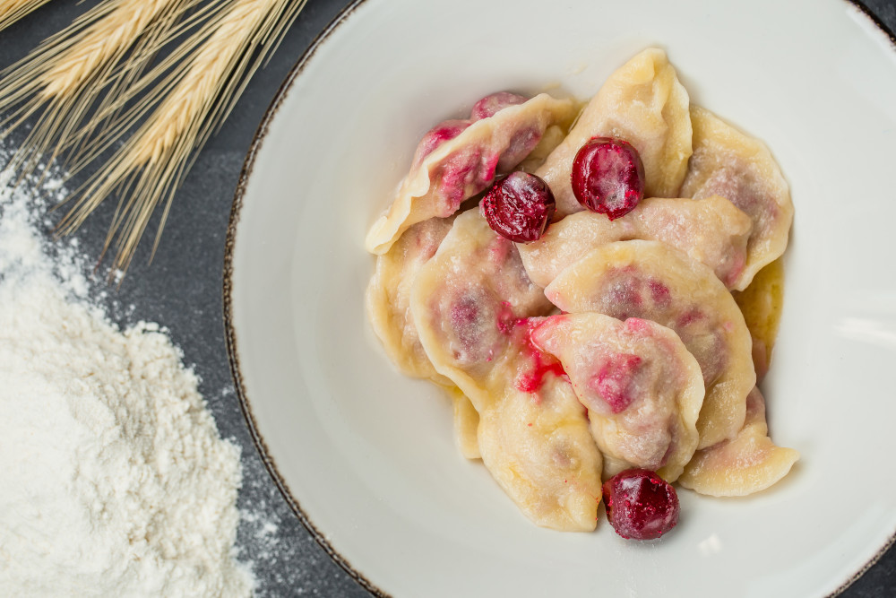
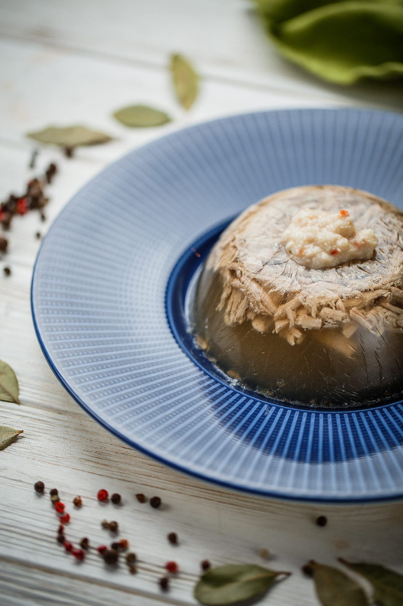

Ukrainian Traditional Dishes

Borscht (Beet Soup)
This hearty beetroot soup is a staple in Ukrainian cuisine. Ingredients can vary, but it typically
includes vegetables like cabbage, carrots, and onions simmered in a rich beef broth with shredded
beets. Often served with a dollop of sour cream and fresh dill.

Hrechanyky (Buckwheat Groats Savory Pancakes)
These savory pancakes are filled with buckwheat groats (hrechka) and can be
pan-fried or baked. Typically served with sauteed onions or mushrooms and sour cream.

Syrnyky (Cheese Pancakes)
Syrnyky are fried quark or cottage cheese pancakes. The dough is simple and filled with creamy
cheese. Topped with sour cream, fruit preserves, or honey.

Varenyky z vyshnyamy (Cherry Dumplings)
Varenyky are delicious dumplings with various fillings. Here, they are filled with sweet cherries.
The dough is similar to pasta dough and boiled before serving. Often drizzled with melted butter and
dusted with powdered sugar.

Kholodets (Meat Jelly)
Kholodets is a savory meat jelly traditionally made with pork shank and head. The meat is cooked for
a long time until tender, then deboned and shredded. Broth is chilled until set into a gelatinous
mass.